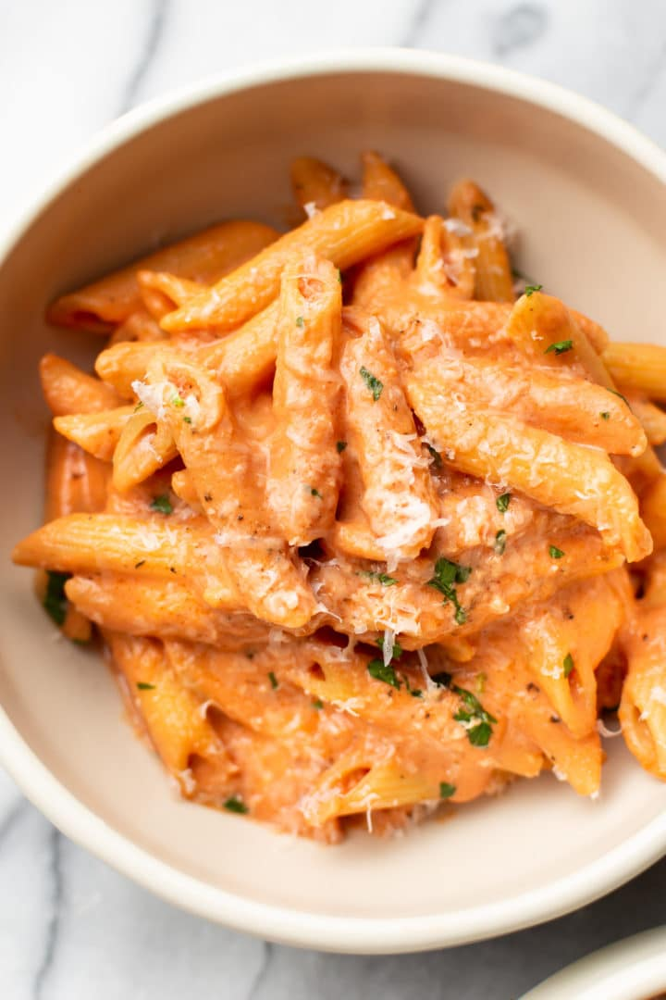

Creamy Pasta

A deliciously creamy dish
Ingredients
- 1 lb Penne pasta
- 1 cup milk
- 1 ounce crumbled blue cheese
- 1 package cream cheese, softened
- 1/2 cup buffalo sauce
- 1 teaspoon garlic powder
- 1 teaspoon paprika
- 1/4 teaspoon freshly ground black pepper
- 3 cups chopped cooked chicken breast
Steps
- Bring a large pot of water to a boil. Cook rigatoni in the boiling water, stirring occasionally until tender yet firm to the bite, about 12 minutes.
- Meanwhile, combine milk, blue cheese, and cream cheese in a large skillet over medium-high heat. Cook, stirring frequently, until cheeses melt, about 5 minutes.
- Drain pasta into a colander; reserve about 1/4 cup cooking liquid and pour into the sauce. Add Buffalo sauce, garlic powder, paprika, and black pepper and stir until smooth. Mix in the pasta and chicken and heat until chicken is warmed through, 2 to 3 minutes.